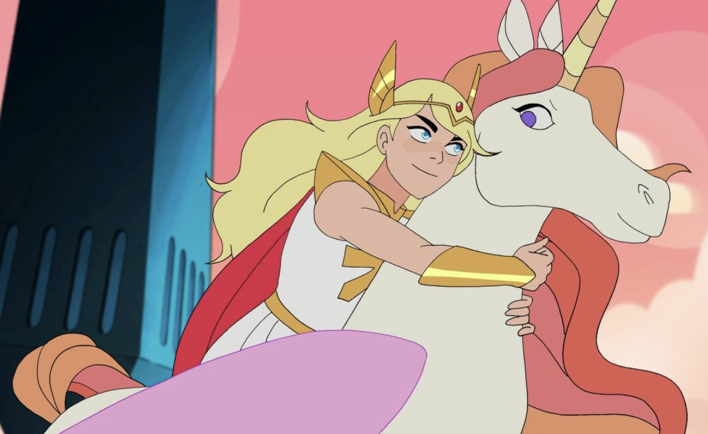
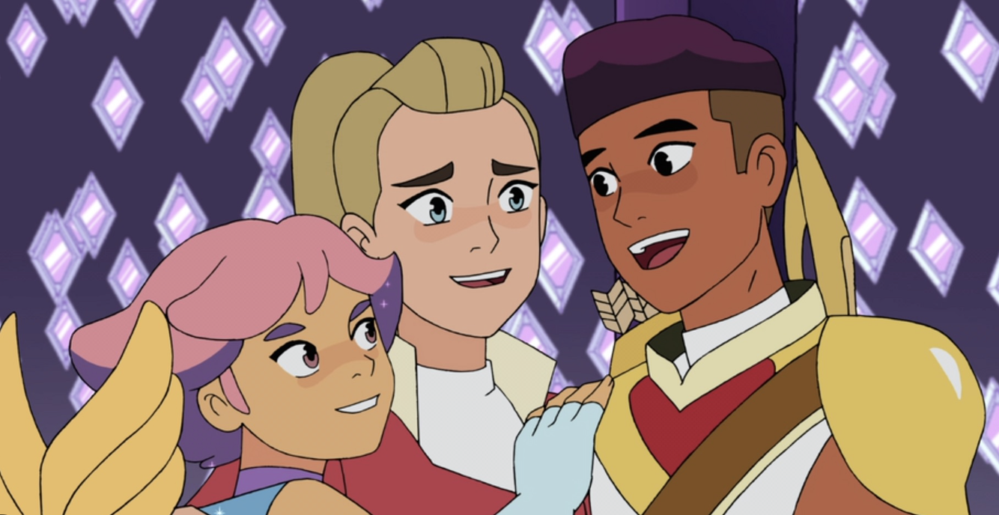
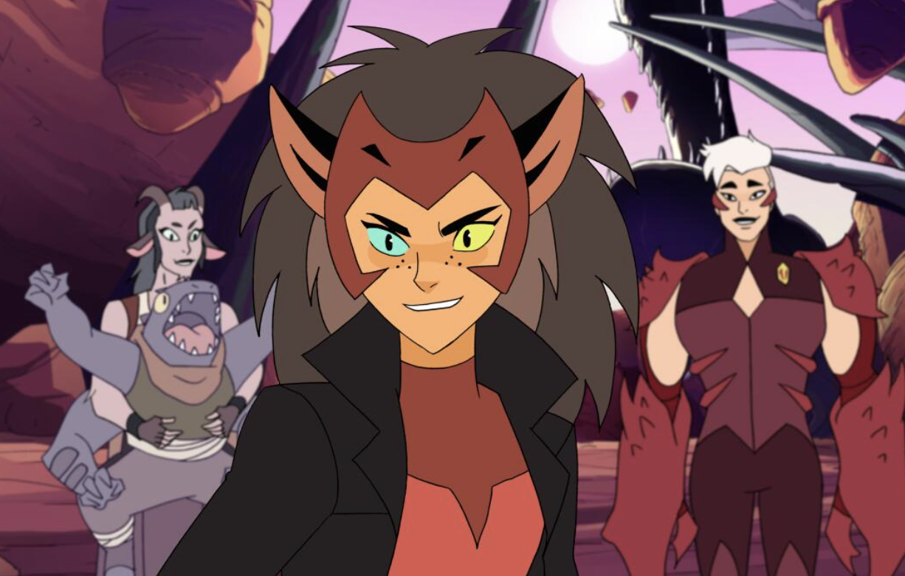
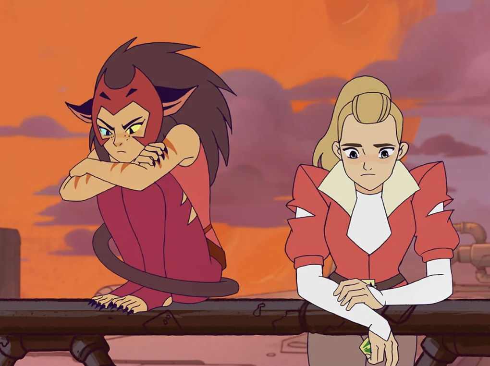
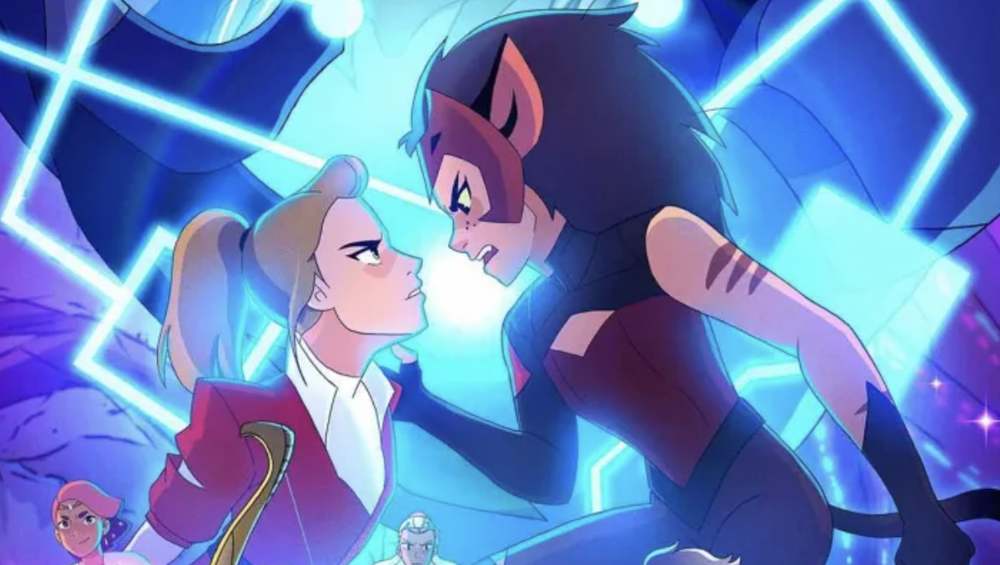
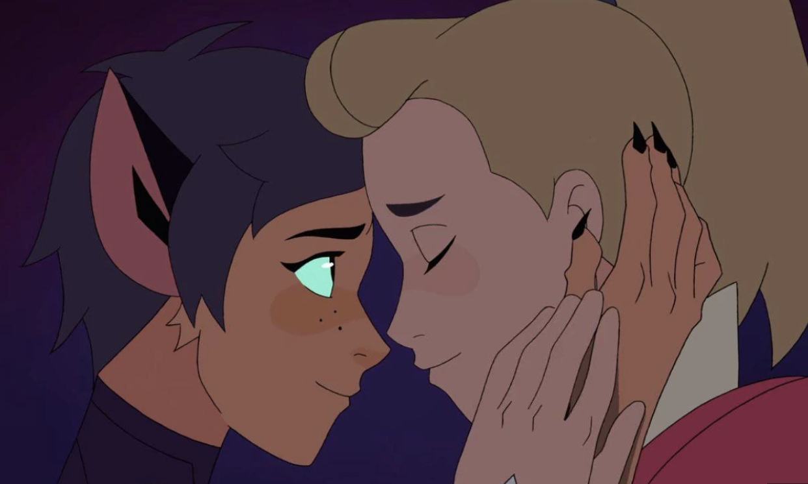
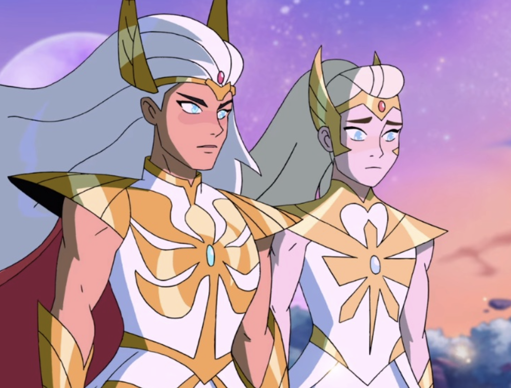
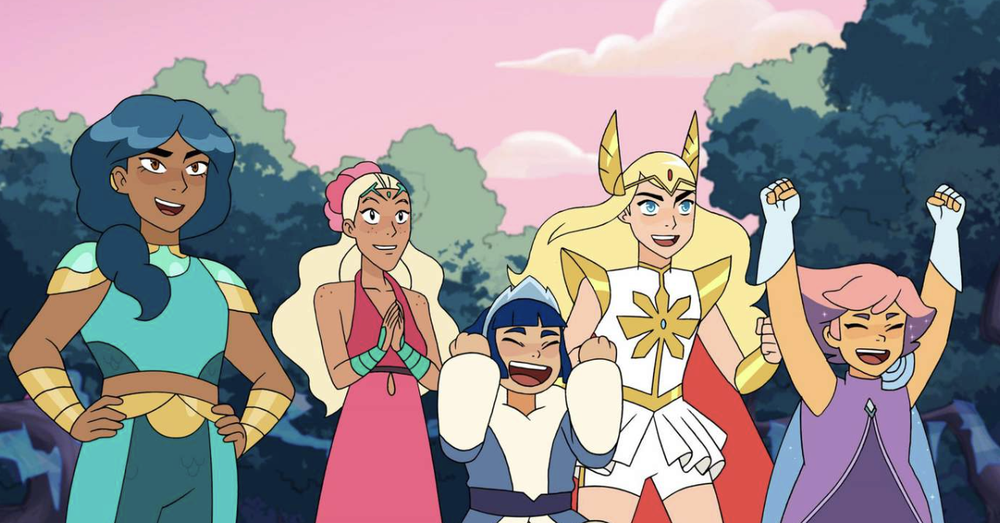

Plot
She-Ra and the Princesses of Power is a reboot of the popular 80s original cartoon. The show follows Afora, a Horde soldier who discovers a magic sword, transforming her into the legendary warrior She-Ra. After learning the Horde is evil, she joins the Rebellion, uniting magical princesses to fight for Etheria while facing her former best friend, Catra.
Main Characters
- Adora voiced by Aimee Carrero
- Glimmer voiced by Karen Fukuhara
- Bow voiced by Marcus Scribner
- Catra voiced by AJ Michalka
- Hordak voiced by Keston John
Similar Shows
Gallery







